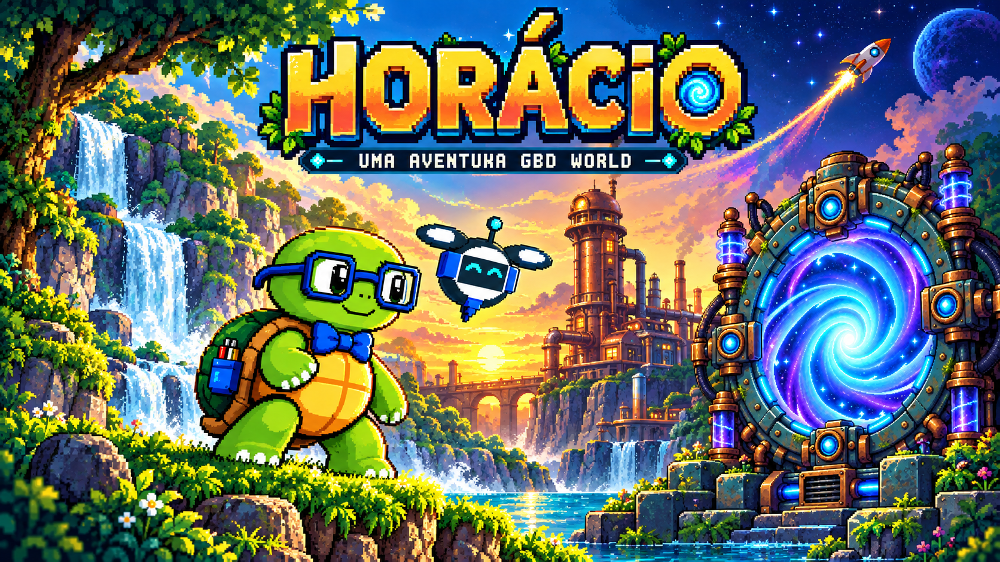

Uma aventura com Horácio
Explore o vale, descubra segredos e resolva puzzles com seu parceiro drone.
Teclado ou controle. Não precisa instalar o Godot.
Controles e dicas para começar
PC: A/D para andar; WASD para pilotar; Q troca de parceiro; F usa o aparelho próximo ou atira; Espaço protege com o casco; V cria plataformas quando essa habilidade for liberada; Esc pausa.
Controle: analógico para mover, RB troca, A ação/tiro, X casco, Y plataforma. Aperte um botão do controle para o navegador reconhecê-lo. O jogo ensina as novas habilidades durante a aventura.
Sua coleção fica salva neste navegador. A versão com comandos de toque para celular será disponibilizada depois.